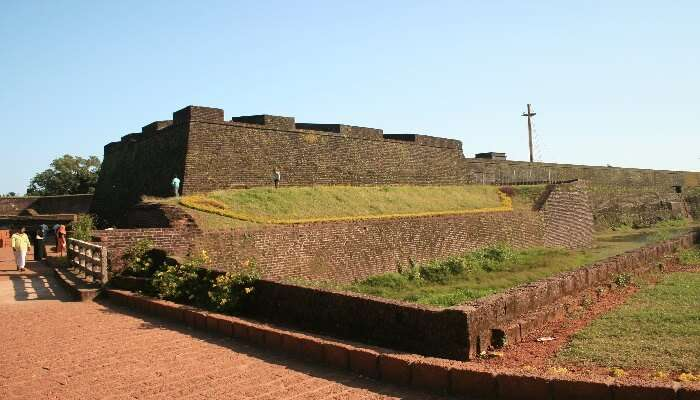
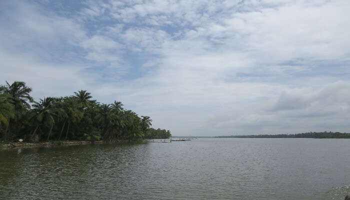
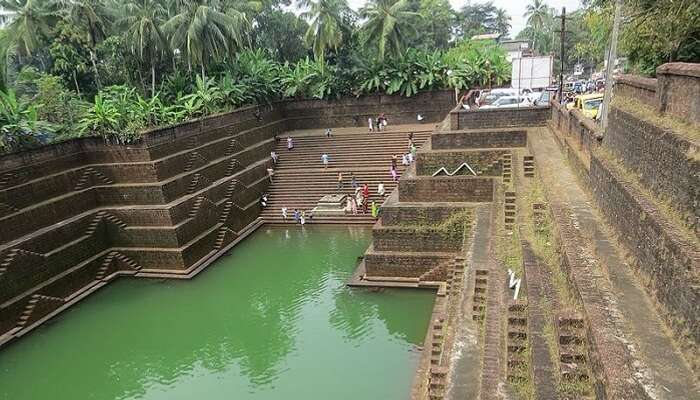

St St Angelo Fort

Kavvayi Island

Dharmadam Island

Baby Beach

Kannur is a coastal city in the south Indian state of Kerala. It was once an ancient trading port. Enduring monuments such as 16th-century St. Angelo Fort, once occupied by European colonial forces, show the city’s significant role in the spice trade. Housed in a former palace, the Arakkal Museum highlights Kerala's one Muslim royal family. The palm-fringed sands of Payyambalam Beach run along Kannur’s western shore.
Kannur, also known as Cannanore, is a beautiful city on the northern side of Kerala State in India. This place is famous for Communist politics and temple festivals. Kannur is the administrative headquarters of the district of Kannur. It is known as Land of Looms and Lores.